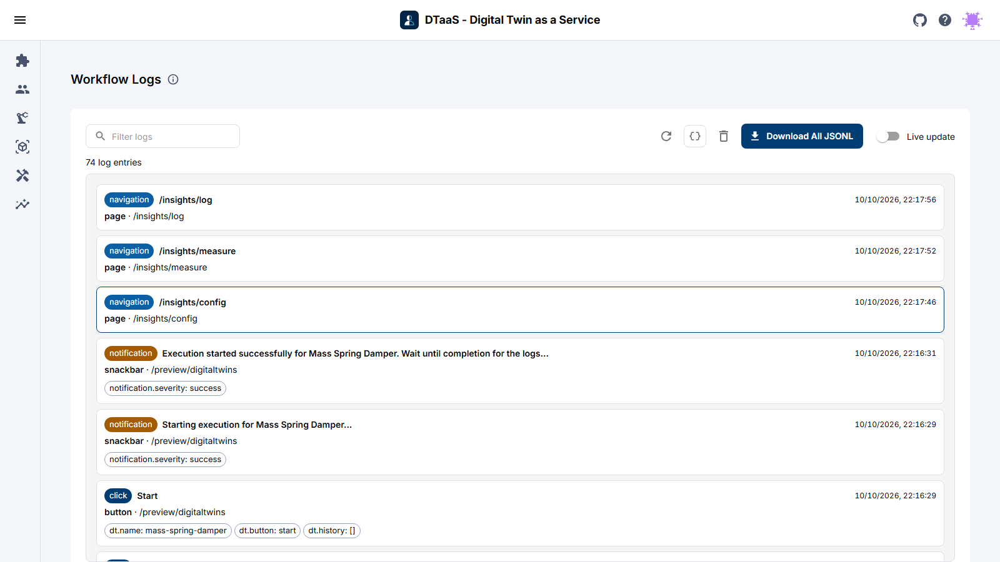
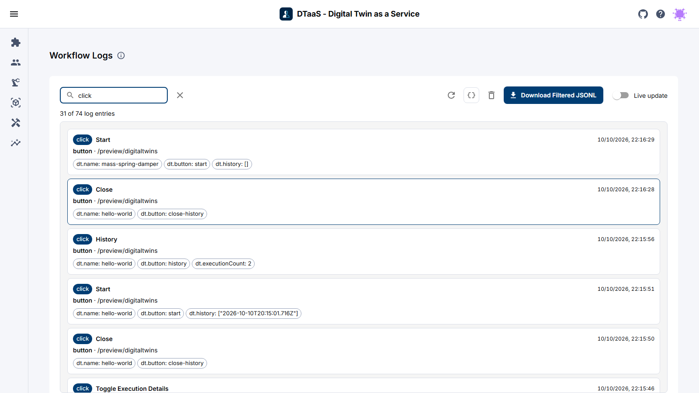

Logs
The DTaaS website can record how you use it: page navigation, button and link clicks, form changes and notifications. The events are captured in the browser and can be reviewed on the Workflow Logs page.
Enabling Logging
Logging is off by default. To turn it on, select the Keep a local activity log checkbox in the Logging Settings section of the Settings page (Account > Settings). Nothing is stored in the browser until this checkbox is selected, so the pages described below stay empty until then.
If the DTaaS installation is configured to stream events to a remote logging server, the Settings page shows a second checkbox, Send logs to followed by the server name. It is also off by default and works independently of the local log. Keep remote logging on only with the consent of the person whose activity is being recorded.
Viewing the Logs
URL:
https://intocps.org/insights/logorhttp://localhost:4000/insights/log
Open the logs from Insights in the menu and then the Logs card,
or go to /insights/log on the DTaaS installation.
The page is titled Workflow Logs. The
icon next to the title shows a short description of the page.

The toolbar above the log list has these controls:
| Control | Description |
|---|---|
| Filter logs | Shows only the entries that match the search text (see Filtering). |
| Refresh | Reloads the log entries from local storage. |
| Raw view | Switches between the card view and the raw JSON Lines view. |
| Clear logs | Permanently deletes all stored log entries, after confirmation. |
| Download All JSONL | Exports the displayed entries as a .jsonl file. |
| Live update | Streams new events into the view as they are recorded. |
Log Entries (Card View)
Each entry is shown as a card with:
- A coloured chip for the event type:
click,change,navigation,notificationordismiss. - The label of the element that triggered the event.
- The timestamp of the event.
- The element type and the path of the page where the event occurred.
- Any extra context recorded for the event, shown as small chips (for example a link's target URL or the new value of a form field).
Filtering Logs
Type into the Filter logs box to show only the entries whose event type, label, element, page or context contains the search text. The count above the log list shows how many of the entries match, for example 3 of 10 log entries.

While a filter is active, the Download All JSONL button becomes Download Filtered JSONL and exports only the entries shown.
Raw View
Raw view shows the same entries as pretty-printed JSON Lines instead of cards and adds a Copy to clipboard button. To keep the page responsive, both views render at most the newest 500 entries and show a note when more exist. The download button and Copy to clipboard ignore this limit and always cover every displayed entry (that is, every entry that matches the filter, if there is one).
Each line is a single JSON object. Entries are shown newest first, so a click on Digital Twins in the menu followed by the page navigation it causes appears as:
Log Event Fields
| Field | Description |
|---|---|
timestamp |
UTC time the event was recorded, in ISO 8601 format. |
event |
The event type: click, change, navigation, notification or dismiss. |
label |
A human-readable label for the element involved. |
element |
The type of UI element involved, e.g. nav-link, button, link, page. |
page |
The URL path of the page on which the event occurred. |
page_transition |
Present on navigation events after the first; records the source and target page. |
context |
Extra metadata specific to the event, e.g. a link's target URL. |
sessionId |
A random identifier generated for the current browser session. |
userHash |
A SHA-256 hash of the username, which links events without storing the name in plain text. |
Live Updates
Live update subscribes the page to new log events as they are recorded elsewhere in the browser (including other open tabs) and reloads the list automatically. It is off by default, because reloading a large log store continuously is unnecessary when you are only reviewing past entries.
Clearing Logs
The icon opens a confirmation dialog, and Clear Logs in that dialog permanently deletes all stored log entries. This cannot be undone. It only clears the entries stored in the browser and has no effect on copies already sent to a remote logging server.
Privacy and Storage
- Log entries are stored locally in the browser (IndexedDB) and never leave the device, unless the DTaaS installation is configured with a remote logging server and remote logging is turned on. Then the entries are also sent to that server.
- The local log store is limited to about 25 MB. The oldest entries are removed automatically once the limit is reached.
- The
userHashfield is a hash of the username, not the username itself. It pseudonymizes the user while still allowing their events to be linked together. - The
sessionIdfield is a random value generated per browser session and is not linked to the user's identity.
Summary
This page described the logging feature of the DTaaS website: turning it on in Settings, viewing and filtering events on the Workflow Logs page, switching between the card and raw JSON Lines views, downloading and clearing logs, and how the stored data protects privacy.